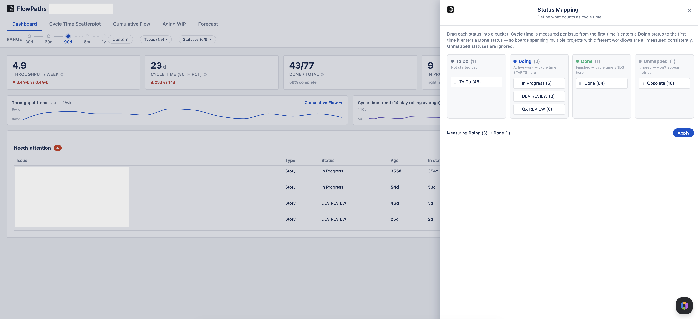
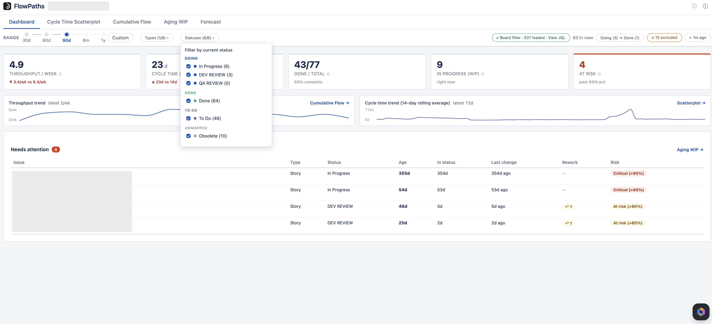
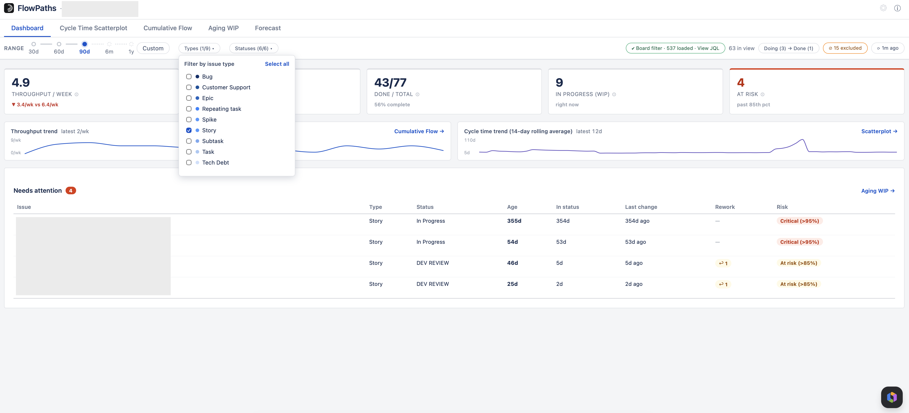
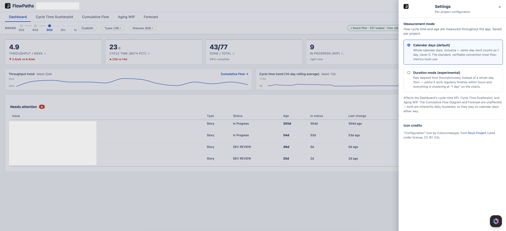

Configuration & Filters
Everything that shapes what the charts show, in one place.
Status Mapping
Click the "Doing → Done" pill in the filter bar. Drag every status your board uses into To Do, Doing, Done — or Unmapped to exclude it entirely. Cycle time is measured per issue from the first time it enters a Doing status to the first time it enters a Done status, so boards spanning multiple projects with different workflows are all measured consistently. Saved per project.

Statuses dropdown
The “Statuses (N/M)” dropdown does two different jobs, and the group a status sits in decides which. Each status shows how many loaded items are currently in it, e.g. “In Progress (20).”
To Do, Done and Unmapped — a view filter
Unticking these simply hides work items by their current status, across every chart. Nothing is recalculated; you are choosing what to look at. This is temporary and separate from Status Mapping.
Doing — a measure
Unticking some of the Doing statuses changes what is being measured. Every time-based number in the app — scatterplot dots and percentile lines, the cycle-time KPI and its trend, item age and risk — becomes the time spent in the Doing statuses still ticked, adding up every visit, instead of the full Doing → Done cycle time.
This is how you answer “how long does review actually take?” without changing your workflow or your Status Mapping. Tick every Doing status again to return to ordinary cycle time.
- Items that never entered the ticked statuses drop out of those charts entirely.
- Throughput and the Forecast count only items that passed through the ticked statuses.
- WIP counts the items sitting in the ticked statuses right now — “how many are in review?” — rather than everything in progress.
- Done / total does not change. It counts the items created in the period whatever statuses they passed through, and its own help says so while a measure is on.
- The pill turns blue while a narrowed measure is on, and a note above every chart states exactly what is being measured.
- Status Mapping is not affected. This is a way of reading your data, not a change to it.
Your selection is yours alone
The ticks are remembered in your own browser, per board, so they are still there when you come back. They are not shared with your team and not stored by the app. If the board’s statuses change — one renamed, one added — the view returns to the default rather than quietly measuring something you never chose.

Board filter
FlowPaths reads your board's saved filter (including multi-project filters) and loads issues from it automatically — the same bounded fetch described under Date range below (90 days of activity, plus anything still open, not literally every issue the board has ever had). The data-source pill and "View JQL" link show exactly what was queried, so you can always confirm what you're looking at.

Date range
The range control is a track with five stops — 30d, 60d, 90d, 6m, 1y — plus Custom for any window inside the last year.
FlowPaths loads 90 days of activity when you open a project, so the first three stops are instant — they filter data already in the browser and never call Jira. The solid part of the track shows what is loaded; the dotted part shows what is not.
Clicking into the dotted part fetches the full year in one go — not just as far as the stop you picked. That is deliberate: it means you wait once per session rather than once per range you try, and every stop is instant afterwards, including going back down to 30d. Hovering a stop tells you which it will be.
Unfinished work is always included regardless of the range, as long as it has been touched in the last year — see below.
Open items are included as long as they’ve been touched in the last year. Jira updates an item’s timestamp on any change at all — a transition, a comment, a field edit — so anything genuinely in flight keeps resetting that clock and stays in scope indefinitely, however long it has been open. What falls outside is only work with no activity whatsoever for twelve months, which is abandoned rather than in progress. Excluding it keeps a stale backlog from crowding out recent items when a large board hits the load limit, and stops it flattening the To Do band on the Cumulative Flow Diagram.

On very large boards
FlowPaths loads at most 2,000 issues in one go. Most boards never reach it — a team finishing five items a week produces about 260 a year — but a large multi-team board can.
When it happens, the filter bar shows the exact date the data is complete from, and anything older was not loaded. That date is not an estimate: issues are fetched newest-activity-first, so the oldest one received is precisely the boundary. Everything after it is present; everything before it is absent.
A number on screen is either correct or explicitly flagged. If you see that warning and your selected range starts before the stated date, the figures for the earlier part of the window are incomplete — narrow the range to bring it fully inside the complete period.
Refresh
The ↻ pill in the filter bar shows how old the loaded data is (“4m ago”) and reloads it from Jira. Because changing the range never refetches, this is how you pick up work that finished since you opened the app. Navigating away from the project and back also reloads.
Issue types
Multi-select chips filter every chart by Story / Bug / Task / etc.
Exclusions
Remove a specific issue (a known outlier, a mis-tracked item) from every metric with the Exclude action. Excluded issues persist per project until you restore them.
Duration mode (optional, per project)
By default, cycle time and age are measured in whole calendar days — the standard, verifiable convention most flow-metrics tools use. If your team's work regularly finishes within hours, that convention can start clustering too much of the Scatterplot at exactly "1 day" to stay useful — a task that took 15 minutes and one that took 20 hours both just read as "1 day."
Duration mode switches Cycle Time and Aging WIP to raw elapsed duration instead (shown as hours or minutes when under a day) — no calendar-day rounding. Turn it on from Settings (the gear icon, top right). It's off by default and saved per project, exactly like Status Mapping, so different projects can use whichever convention fits their pace.
Rework: returns & reopens
Shown in Aging WIP. A return is a backward step in the workflow that didn't come from Done (e.g. QA → In Development); a reopen is a backward step from a Done status. "Backward" follows your Status Mapping order, so it even catches bounce-backs within the Doing lanes.
How days are counted
Cycle time and item age are inclusive calendar days, counted in your Jira site's own timezone — not each viewer's personal timezone. An item that starts and finishes on the same day counts as 1 day, never 0. All day/week buckets across every chart (Scatterplot, CFD, throughput, Aging WIP) use that same site timezone, so the numbers match what Jira itself reports, and look identical for every viewer regardless of their own profile timezone.
Time in a status — used by the narrowed measure above, and by the export’s “time in status” columns — counts the distinct calendar days an item sat in that status. A day touched by two separate visits counts once, and a visit that starts and ends the same day counts as 1 day. In Duration mode it is raw elapsed time instead.
Download PNG
Every main chart has a small download icon in the top-right corner. Click it to save the chart as a PNG for reports or chat — this exports the chart only, not the filter bar or JQL.
Export to CSV
The ⤓ Export pill in the filter bar downloads the work items currently loaded, so you can take the numbers into a spreadsheet or your own tooling. Two files are produced:
- Items — one row per work item: key, summary, type, status, dates, computed cycle time, time in each status, and rework counts.
- Transitions — one row per status change, which is what you need to reproduce the timings yourself.
The contents are exactly the fields FlowPaths already reads and shows on screen — nothing more is fetched for the export. No people are named in either file. Assignee, reporter and the authors of status changes are never included, because the app never reads them in the first place.
Items you have excluded are still written out and flagged as excluded rather than dropped, so an audit of the file never finds something silently missing.
Focus mode
The expand icon next to Download PNG opens the chart in a large in-app overlay for easier reading. Press Esc, click the ✕, or click outside the chart to return.